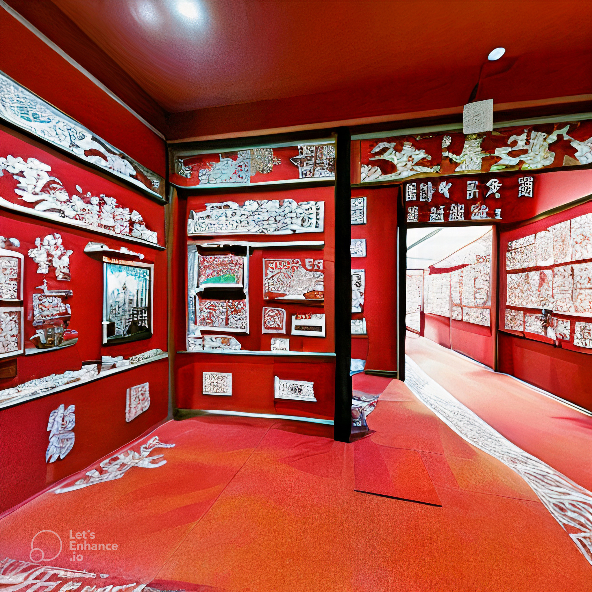

剪纸博物馆
剪纸博物馆的创意来自于对中国传统文化的深刻理解和现代设计理念的创新结合。该项目旨在展示剪纸艺术的丰富多样性和深远影响，同时为访客提供一个互动式的学习和体验空间。设计团队深入研究了剪纸艺术的历史、技巧和文化意义，将这些元素巧妙融入博物馆的建筑设计和展览布局中。通过使用现代科技，如增强现实(AR)和虚拟现实(VR)，参观者可以不仅欣赏到经典的剪纸作品，还能亲手体验剪纸的乐趣，深入了解这项艺术背后的故事和技巧。博物馆的目标是让这项古老的艺术形式焕发新生，吸引更广泛的观众群体，特别是年轻一代，让他们认识并欣赏中国传统文化的魅力。此外，博物馆还计划定期举办特展和工作坊，邀请剪纸艺术家分享他们的创作经验，推动这项传统艺术的创新和传承。
- 通过收藏和展示各种历史和现代剪纸作品，剪纸博物馆为这项传统艺术提供了一个保护和传承的平台。
- 博物馆可以通过展览、讲座、工作坊和互动展示等方式，教育公众了解剪纸艺术的历史背景、文化意义和技术细节。
- 剪纸博物馆提供一个平台，鼓励艺术家创新传统技法，探索剪纸艺术的新可能性。
- 通过利用最新的科技，如虚拟现实(VR)、增强现实(AR)和互动多媒体展示，剪纸博物馆将传统艺术与现代科技相结合，为参观者提供了沉浸式的体验。